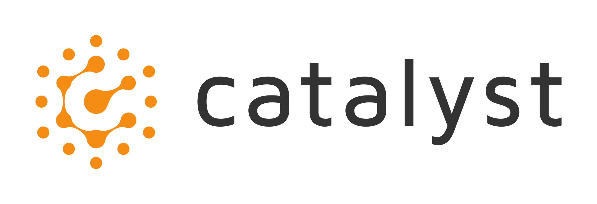

Member of Institute for Interdisciplinary Information Sciences (IIIS).
Advisor: Mingyu Gao.
B.S. in Computer Science | Shanghai Jiao Tong University
Sep'1, 2020 - Jun'30, 2024
Member of ACM Class, Zhiyuan College. Got a distinguished GPA (94/100,
Rank 1/36) during my B.S. Advisors: Weinan Zhang,
Quan Chen and
Yong Yu.
Experience
R&D Intern for MLSys | ByteDance Seed Foundation Team
Sep'23, 2024 - Present
Research topics: Deep Learning Compilers.
Research Intern | Microsoft Research Asia
June'20, 2023 - June'28, 2024
Research topics: Distributed system, Large Language Models (LLMs) serving system.
Work with Zhenhua Han and
Yuqing Yang.

Internship | Catalyst, Carnegie Mellon University
Aug. 2022 - June. 2023
Research topics: Deep learning compilers, Graph-level IR for deep learning (Relax IR),
Deployment of
Large Language Models (mlc-llm).
Work with Tianqi Chen and Siyuan
Feng.